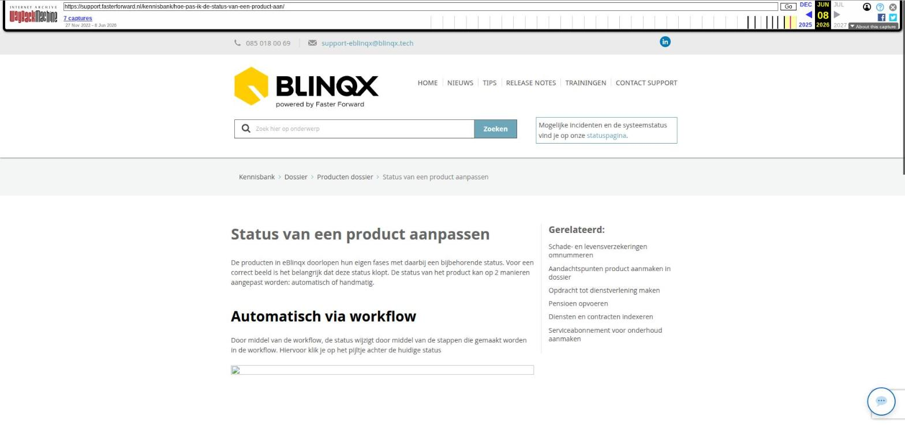

ADN Module gebruiken

Tekstinhoud
Title: ADN Module gebruiken | Support
URL: https://web.archive.org/web/20250619153620/https://support.fasterforward.nl/kennisbank/1-prolongatie-import/
Source element: <article>
---
ADN Module gebruiken
Beschikbaar in: eBlinqx Compleet, Verzekering Provinciaal
Zodra de ADN module is actief is en AFD berichten uit de postbus worden ingelezen in eBlinqx, kun je mutaties en prolongaties van de verzekeraars gaan verwerken. We leggen uit hoe de verder verwerking werkt.
Ontvangen berichten bekijken
Filteren
Legenda
Batches
Tabbladen
Eerste verwerking door eBlinqx
Ontvangen berichten bekijken
De ingelezen ADN en Aplaza batches met mutatie- en prolongatieberichten kan je terug vinden via het dashboard, in het blok 'Binnengekomen berichten'. Klik op "… Adn berichten vereisen actie' om batches met prolongaties en mutaties vanuit de verzekeraar te bekijken.
Een batch is een groep van meerdere mutaties en prolongaties van één verzekeraar.
De batches zijn ook te bereiken via Financieel – Prolongaties – Prolongatie import. Wanneer je de module opent, kom je op de volgende pagina terecht.
Filteren
Het overzicht bied je een aantal zoekfilters die de mogelijkheid bieden om het aantal batches te verdichten.
Legenda
De legenda rechts bovenin geeft een uitleg van de gebruikte kleuren en iconen die binnen het overzicht terug kunnen komen. er wordt met kleuren aangegeven welke stappen als laatst genomen zijn in de batch. In de legenda staat wat elke kleur betekent. Deze legenda verschilt voor maatschappij incasso en tussenpersoon incasso
Batches
Onder de zoekfilters en legenda kan je de ingelezen prolongatie- en mutatiebatches terug vinden. Het overzicht toont een overzicht van batches per maatschappij. Daarnaast kan je het type, por code, datum en totaal bedrag terug vinden van de batch. De sortering van de batches vindt plaats op de importeer datum van de batch.
Wanneer een batch niet gekoppeld kan worden aan een maatschappij (omdat de POR code niet wordt herkend) zal het systeem door middel van een geel driehoekje een melding geven. Wanneer je over dit driehoekje gaat met jouw muis wordt de melding getoond. Vaak is dit omdat de POR code niet herkend wordt en/of er geen dagboek voor de maatschappij is aangemaakt. Lees hier hoe je dit kunt oplossen.
Tabbladen
Daarnaast zijn er nog andere tabbladen zichtbaar. Hier kan je daar meer informatie over vinden.
Eerste verwerking door eBlinqx
De batch komt binnen met de status 'In wachtrij'. Als de batch wordt opgepakt door eBlinqx worden de volgende stappen volledig doorlopen:
OM = polis match: Alle polissen worden op basis van het polisnummer in het offertedeel gematched. De status is nu 'Polis match afgerond'
Controle journaalpost aangemaakt: er worden controle journaalposten aangemaakt worden. De status is dan 'Controle journaalposten aangemaakt'.
Mutatie match: De aangeleverde mutaties van de maatschappij worden voor zover mogelijk verwerkt. De status van de batch wijzigt naar 'Mutatie gegevens overnemen afgerond'.
Wanneer de batch op 'Mutatie gegevens overnemen afgerond' staat, kan deze door de gebruiker verder verwerkt worden.
Lees hier de stappen voor het verwerken van de batch.
Laatste update: 16 juli 2024
Was deze informatie nuttig?
Ja Nee
[Gerelateerde artikelen vermeld in de zijbalk, niet bereikbaar via de "Bekijk alles"-paginering (pagina 3/4 niet gearchiveerd): "Handmatig prolongeren maatschappij incasso", "Boekingsperiode ADN bericht wijzigen", "Bedragen op pakketniveau in controlelijst"]